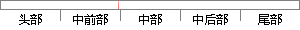

登录成功后台返回token,并保存在本地缓存中。
片段位置图

相似结果|
相似片段 1：的token字符串加密串、用户相关信息给客户端，否则返回失败信息给客户端。4．2用户状态保存和身份验证登录成功后，hpp服务端将token字符串和用户信息返回给ApP客户端，ApP将该数据缓存起来用作以后验证
相似片段 2： chart of SSO当用户首次登录系统时，登录成功以后，以用户 id 作为 key，生成 token 令牌，把用户信息保存至缓存中并设置有效期，然后将令牌(token)写入 cookie 中，再
相似片段 3：，然后 con?troller将该对象返回给页面，前端通过 js将 token保存在cookie中，对于需要验证的请求（除了登录和 swagger测试用以外的接口），在每个请求的请求头里加入 control?ler-token，给后台传入 token进行身份认证，每次身份认证都会刷新 token有效期。
相似片段 4：令牌数据，然后用该令牌直接去访问资源，如果令牌有效那么就会访问成功，如果令牌无效就跳转到用户登录界面即可。客户端缓存 token网关校验账号信息，生成 token后台服务账号信息（加密）返回 token
|
※ 片段修改建议 ※
近似词参考：- 成功：乐成 胜利
- 后台：背景
- 保存：保留 留存 生存
- 本地：当地
系统自动生成语句：登录乐成背景返回token,并保留在当地缓存中。
注：本片段修改建议为系统自动生成，仅供参考。